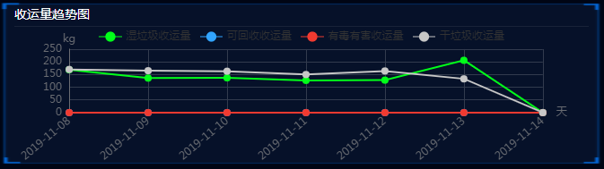

ECharts动态获取后台传过来的json数据进行多个折线图的显示，折线的数据由后台传过来
ECharts 多个折线图动态获取json数据
效果图如下：

js部分：
function mychart1(datetime,dateNums1,dateNums2,dateNums3,dateNums4) {
myChart1 = echarts.init(document.getElementById('main1'));
option = {
title: {
text: '',
left: 'left',
top: '4%',
textStyle: {
color: '#000000',
fontSize: 16
},
},
tooltip: {
trigger: 'item',
formatter: '{a} <br/>{b} : {c}'
},
legend: {
data:['湿垃圾收运量','可回收收运量','有毒有害收运量','干垃圾收运量']
},
xAxis: {
type: 'category',
boundaryGap: false,
name: '天',
splitLine: {
show: true, //网格线是否显示
lineStyle: {
color: '#323B4E' // 修改网格线颜色
}
},
axisLine: {
// symbol: ['none', 'arrow'], //箭头
lineStyle: {
color: '#696C72',
}
},
axisTick: { //qu刻度线
show: false
},
axisLabel: { //x轴时间文字显示不全问题
interval: 0,
rotate: 40
},
data: datetime
},
grid: {
left: '5%',
right: '8%',
bottom: '0%',
top: '16%',
containLabel: true
},
yAxis: {
type: 'value',
// min: 0, //y轴最小值设置
// max: 100, //y轴最大值设置
name: 'kg',
nameLocation: 'end',
nameTextStyle: {
padding: -10,
},
splitLine: {
show: true, //网格线是否显示
lineStyle: {
color: '#323B4E' // 修改网格线颜色
}
},
axisLine: {
// symbol: ['none', 'arrow'],
lineStyle: {
color: '#696C72' //0c3b71
}
},
axisTick: {
show: false
},
},
series: [{
symbol: 'circle',
symbolSize: 8,
itemStyle: {
normal: {
color: "#01ff19",
lineStyle: {
color: "#01ff19",
}
}
},
name: '湿垃圾收运量',
type: 'line',
data: dateNums1
},{
symbol: 'circle',
symbolSize: 8,
itemStyle: {
normal: {
color: "#31A4FF",
lineStyle: {
color: "#31A4FF",
}
}
},
name: '可回收收运量',
type: 'line',
data: dateNums2
},{
symbol: 'circle',
symbolSize: 8,
itemStyle: {
normal: {
color: "#F13A30",
lineStyle: {
color: "#F13A30",
}
}
},
name: '有毒有害收运量',
type: 'line',
data: dateNums3
},{
symbol: 'circle',
symbolSize: 8,
itemStyle: {
normal: {
color: "#C7C7C7",
lineStyle: {
color: "#C7C7C7",
}
}
},
name: '干垃圾收运量',
type: 'line',
data: dateNums4
}]
};
myChart1.setOption(option);
}
function echarsfun1() {
var param = {
"name": houseName
}
var paramStr = $.param(param)
ajaxGet("largeScreenDisplayController.do?todayTrend&" + paramStr, function(data) {
var data = JSON.parse(data)
if(data) {
var data = data.data
console.log(data)
var datetime = []; //时间
var dateNums1 = []; //湿垃圾
var dateNums2 = []; //可回收
var dateNums3 = []; //有毒有害
var dateNums4 = []; //干垃圾
//湿垃圾
$.each(data.yfgarWeightMapList, function (index, item) {
datetime.push(item.times); //挨个取出类别并填入类别数组
dateNums1.push(item.yfgarWeight);
});
//可回收
$.each(data.recycleWeightMapList, function (index, item) {
dateNums2.push(item.recycleWeight);
});
//有毒有害
$.each(data.youduWeightMapList, function (index, item) {
dateNums3.push(item.youduWeight);
});
//干垃圾
$.each(data.otherWeightMapList, function (index, item) {
dateNums4.push(item.otherWeight);
});
mychart1(datetime,dateNums1,dateNums2,dateNums3,dateNums4)
}
})
}后台传过来的json数据格式后台传过来的json数据格式
{
"msg": "获取成功",
"code": 0,
"data": {
"otherWeightMapList": [{
"times": "2019-11-07",
"otherWeight": "160"
}, {
"times": "2019-11-08",
"otherWeight": "170"
}, {
"times": "2019-11-09",
"otherWeight": "165"
}, {
"times": "2019-11-10",
"otherWeight": "163"
}],
"recycleWeightMapList": [{
"times": "2019-11-07",
"recycleWeight": "0"
}, {
"times": "2019-11-08",
"recycleWeight": "0"
}, {
"times": "2019-11-09",
"recycleWeight": "0"
}, {
"times": "2019-11-10",
"recycleWeight": "0"
}],
"youduWeightMapList": [{
"times": "2019-11-07",
"youduWeight": "0"
}, {
"times": "2019-11-08",
"youduWeight": "0"
}, {
"times": "2019-11-09",
"youduWeight": "0"
}, {
"times": "2019-11-10",
"youduWeight": "0"
}],
"yfgarWeightMapList": [{
"yfgarWeight": "156",
"times": "2019-11-07"
}, {
"yfgarWeight": "169",
"times": "2019-11-08"
}, {
"yfgarWeight": "136",
"times": "2019-11-09"
}, {
"yfgarWeight": "137",
"times": "2019-11-10"
}]
}
}